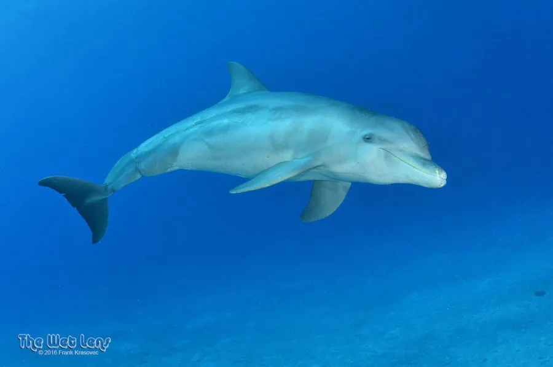

哺乳动物 · 动物界
宽吻海豚 Tursiops truncatus

分布最广的海豚之一，吻部短粗、嘴角上翘，智力高且善于学习，会用海绵保护鼻子，也常与人类互动。
- 分类
- 门脊索动物门纲哺乳纲目偶蹄目科海豚科属宽吻海豚属
- 栖息环境
- 温带与热带海洋的近岸浅海、河口和远洋海域
- 地理分布
- 全球各大洋的温带和热带海域，包括近岸与远洋种群
- 保护级别
- IUCN 无危（LC）；CITES 附录Ⅱ
物种志
宽吻海豚体长 2.0–3.9 米，体重 150–650 kg，雄性略大于雌性。它的身体流线型，背鳍高而弯，吻部短粗如瓶口，因此也称瓶鼻海豚；体色为深灰至灰褐色，腹部较浅，眼周有深色斑纹，嘴角自然上翘，看起来像在微笑。
宽吻海豚分布于全球各大洋的温带和热带海域，包括近岸浅海和远洋，是分布最广的海豚之一。它结成 5–30 只的群体，群体结构复杂，个体有各自的“签名哨声”；智力高，善于学习，会用回声定位探测鱼群，部分个体还会用海绵保护吻部在海底觅食。宽吻海豚以鱼类、乌贼和甲壳类为食，常与人类船只互动，也是海洋馆中最常见的海豚。雌鲸妊娠期约 12 个月，每胎 1 仔。全球种群总体稳定，但部分近岸种群受污染和渔业误捕影响。
形态与习性
- 食性鱼类、乌贼与甲壳类，用回声定位捕食
- 体长2.0–3.9 m，雄性略大于雌性
- 体重150–650 kg
- 寿命约 40–50 年
- 繁殖妊娠期约 12 个月，每胎 1 仔
- 社会结构结成 5–30 只的群体，个体有签名哨声
- 智力会用海绵保护吻部，善于学习
趣味知识
- 宽吻海豚的吻部短粗，因此也被称为“瓶鼻海豚”。
- 每只宽吻海豚都有独特的“签名哨声”，像名字一样。
- 部分个体觅食时会把海绵顶在吻部，避免被礁石划伤。
- 宽吻海豚靠回声定位在浑浊海水中探测鱼群。